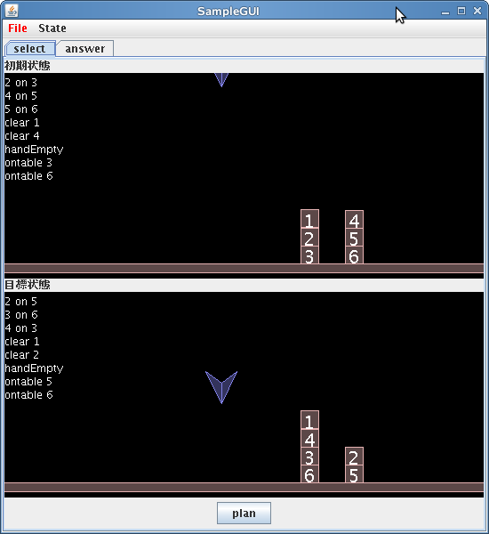
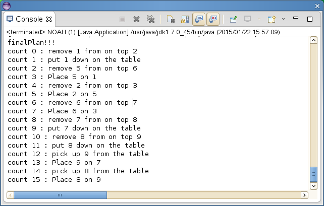

教科書3.3節のブロック操作のプランニングのプログラム (文字コードはUTF-8) を参考にして，以下の必須課題に取り組みなさい．
[必須課題7-1] 効果的なオペレータ間の競合解消のための戦略を考察し，プランニングシステムへ実装せよ（教科書p. 148 練習問題1）．
[必須課題7-2] 上記7-1で実装したプランニングシステムのGUIを実装せよ．
ブロック操作の過程をグラフィカルに可視化し，初期状態や目標状態をGUI上で変更できることが望ましい．
[発展課題7-3] 上記のプランニングのプログラムでは，ブロックの色や形を考えていないので，色と形のいずれか，あるいは両方を扱えるようにせよ.
[発展課題7-4] ユーザが日本語の命令文によってブロックを操作したり，初期状態／目標状態を変更したりできるようにせよ．
なお，命令文の動詞や語尾を1つの表現に決め打ちするのではなく，多様な表現を許容できることが望ましい．
自分たちはNOAHに基づくプランニングシステムを作りました。 NOAHとは Nets Of Action Hierarchiesの略称で、直訳すると[動作階層のネット] STRIPSに基づくサンプルプログラムでは、ある副目標の達成が別の副目標の達成の障害になってしまい、 解が非効率に、あるいは矛盾が含まれ解にならない事があったので、 正しく動くプランニングシステムを作りたかったので、NOAHにしました。
NOAH プランナーの大まかなプログラムの構造は次の通りです。
| クラス/インタフェース | 説明 |
|---|---|
| Node | 状態、命令、結合状態などを表すNodeのクラス |
| JointJ | NodeとNodeとを結合するクラス |
| JointS | 始まりとNodeとを結合するクラス |
| Operator | 動作を表すクラス |
| NOAHParameters | 初期状態、目標状態を表すクラス |
| NOAH | 実際にプランニングするクラス |
現実味のあるブロックワールドを表現するために、重力やその他抗力の働く環境を再現できるよう、物理エンジンのライブラリ JBox2D を用いた。このライブラリを使ってブロックワールドを描画するために、次のようなクラス、インタフェースを作成した。
| クラス/インタフェース | 説明 |
|---|---|
| Camera | カメラの位置、方向などの情報を格納するためのクラス |
| PhysicsDebugDraw | JBox2D で用いる、各コンポーネントを描画する際に利用するクラス |
| PhysicsPanel | JBox2D を用いて物理ワールドを描画するパネルのクラス |
| PlannerPanel | PhysicsPanel を使ってブロックワールドを描画するパネルのクラス |
| PlannerController | プランナーと結合するためのインタフェース定義 |
| SampleGUI | プランナーと GUI を結合したもの |
これらの大半は、使用しているライブラリ JBox2D を使う上で必要な設定や描画周りであるが、クラス PlannerPanel において、ブロックワールド内のブロックを操作するための処理を実装している。その PlannerPanel に対して行うことができる操作を、インタフェース PlannerController に定義し、NOAH プランナーとの結合を可能にしている。最終的に SampleGUI クラスにて、PlannerPanel と NOAH プランナーを使い、グラフィカルにプランニングを表現する GUI を構成している。
今回実装したプログラムではノードを使い、 初期状態と他のノードとの関係から各ノードの順序を決め、プランを作るようにしました。
目標状態や処理の一つ一つを、ノードとして、 初回には、先頭にはスタートのノードとゴールのノードを配置、先頭の後ろに配置するJointS、 各ノードの間にJointJという結合を表すクラスを配置と結合をして、
上記の 1,2,3 を繰り返すと、目標状態のブロックを積む塔の数だけ列が出来るので、 干渉しないように動作の競合解消、無駄な動作が出ないように、動作の効率化または省略を行い、オペレーターの実行順序を決定していきます。 特に重要な箇所として、動作の効率化と省略です。
for (JointJ j : jList) {
Matcher stackMap = p2.matcher(j.getBack().getNodeName());
Matcher unMap;
Node change = null;
if (stackMap.find()) {
for (Node node : j.getForward()) {
unMap = p3.matcher(node.getNodeName());
if (unMap.find()) {
if (stackMap.group(1).equals(unMap.group(1))
&& stackMap.group(2).equals(unMap.group(2))) {
change = node;
}
}
}
if (change != null) {
System.out.println("success");
while (true) {
Node last = change;
j.removeForward(change);
change = (Node) change.getForward();
if (orderString.contains(change.getNodeName())) {
preList.remove(last);
} else {
j.addForward(change);
}
Object obj = j.getBack().getBack();
System.out.println(obj.getClass().toString());
if (obj instanceof Node) {
System.out.println("success");
j.changeBack((Node) obj);
} else {
if (obj instanceof JointJ) {
JointJ tail = (JointJ) obj;
tail.removeForward(j.getBack());
jList.remove(tail);
break;
}
}
stackMap = p2.matcher(j.getBack().getNodeName());
unMap = p3.matcher(change.getNodeName());
if (stackMap.find() && unMap.find()) {
if (stackMap.group(1).equals(unMap.group(1))
&& stackMap.group(2).equals(
unMap.group(2))) {
} else {
break;
}
}
}
}
}
}
このコードでは、 ある目標のブロックの塔の動作で、 無駄な動作がある場合にそれを省略するようにしています。
例えば
という順番だと、2,3を連続で実行しても無駄なので、 この処理は消しています。 2,3を省略することで、1,4が連続して実行され、無駄になるので、 これも省略できるように対応しています。
else if (stacks.size() == 0) {
// unstackだけのとき
// ここが重要かもしれない？
ArrayList stackList = new ArrayList();
HashMap sLen = new HashMap();
for (int h = 0; h < tList.size(); h++) {
stackList.add(null);
ArrayList list = tList.get(h);
for (int k = 0; k < list.size(); k++) {
Node temp = list.get(k);
Matcher sMat = p2.matcher(temp.getNodeName());
if (sMat.find()) {
stackList.remove(h);
stackList.add(h, sMat.group(1));
sLen.put(sMat.group(1), k);
break;
}
}
}
int action = -1;
for (int k = 0; k < stackList.size(); k++) {
if (stackList.get(k) != null) {
String stack = stackList.get(k);
Matcher sMat = p2.matcher(stack);
if (sMat.find()) {
for(int l = 0 ; l < nodes.size() ; l++){
Node node = nodes.get(l);
Matcher unMat = p3.matcher(node.getNodeName());
if(unMat.find()){
if(unMat.group(1).equals(sMat.group(1))){
if(action == -1){
action = k;
}else{
if(sLen.get(stackList.get(action)) > sLen.get(stack)){
action = k;
}
}
}
}
}
} else {
}
}
}
if(action != -1){
orderList.add(nodes.get(action));
orderString.add(nodes.get(action).getNodeName());
}else{
for(Node node:nodes){
orderList.add(node);
orderString.add(node.getNodeName());
}
}
}
このソース部では、
となったとき、1で取ったAを一度テーブルの上に置かないといけなくなるので、
という順番に入れ替える事で結果が変わらない（干渉しない）なら入れ替えるという部分です。
プログラムの構造で述べたように、今回はブロックワールドの表現を行うにあたり、物理エンジンのライブラリを用いている。このライブラリを使って画面上に描画を行うために、ライブラリが用意している DebugDraw という描画のために必要なメソッド定義を持った抽象クラスを実装することで、ライブラリ側にその実装を使って描画させ、簡易的に画面を構成している。
その他、今回林(政)が作成したプログラムの大半が、このライブラリを使う上で必要なものであり、これらは課題を行う上で特筆すべき点ではないため、詳細な説明は記述していない。
この、物理エンジンを使ったワールドに対して、ブロックを配置し、それらを移動する操作は、「プログラムの構造」で前述した通りPlannerPanel が持っている。これに関して、個人のページにて、詳細な説明を記述した。
- -
考察は各個人のページに記述されている。
感想は各個人のページに記述されている